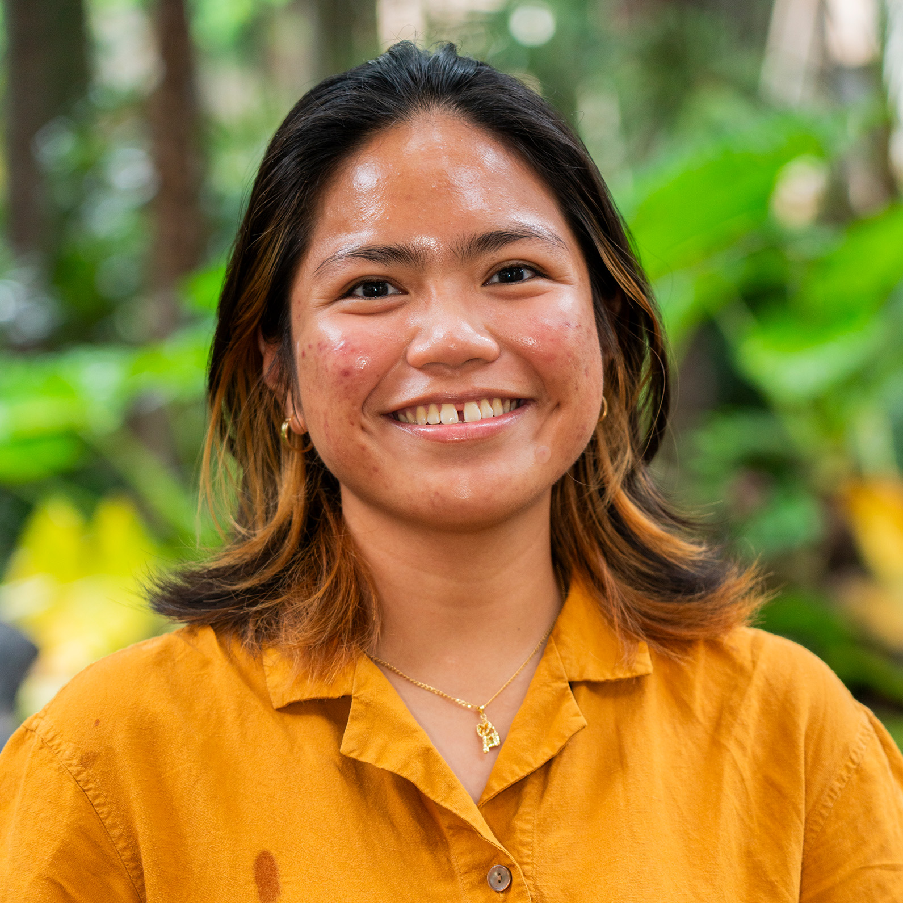
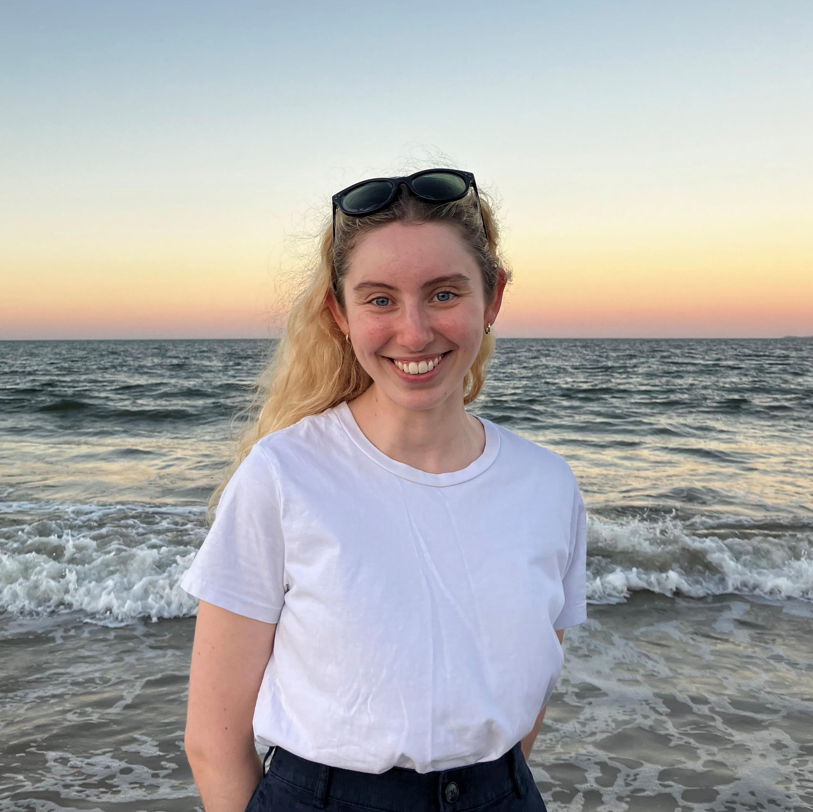
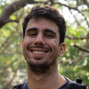
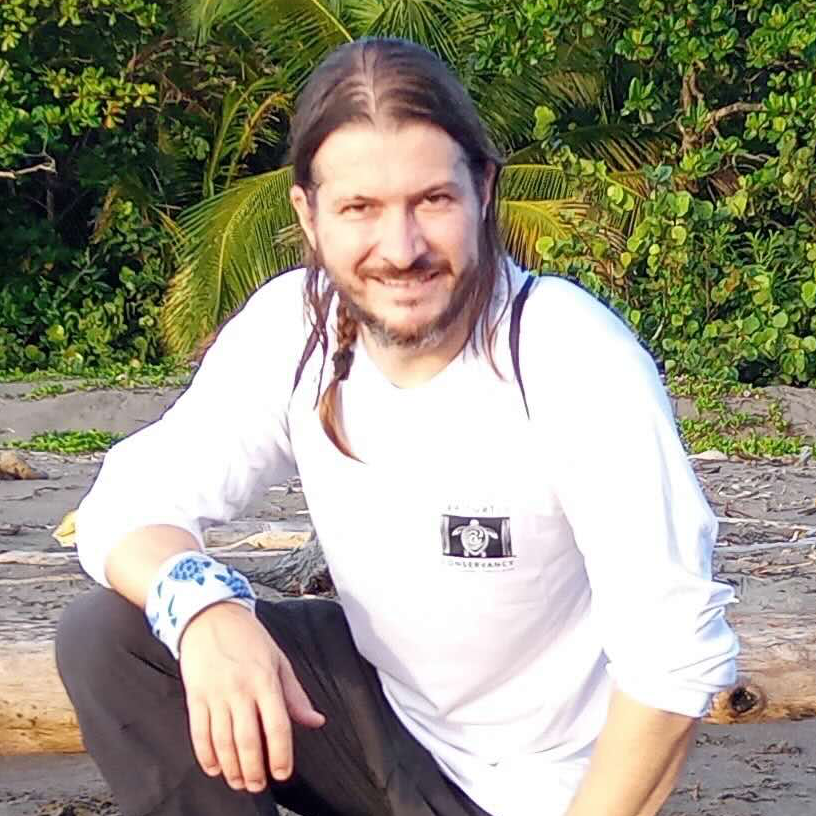
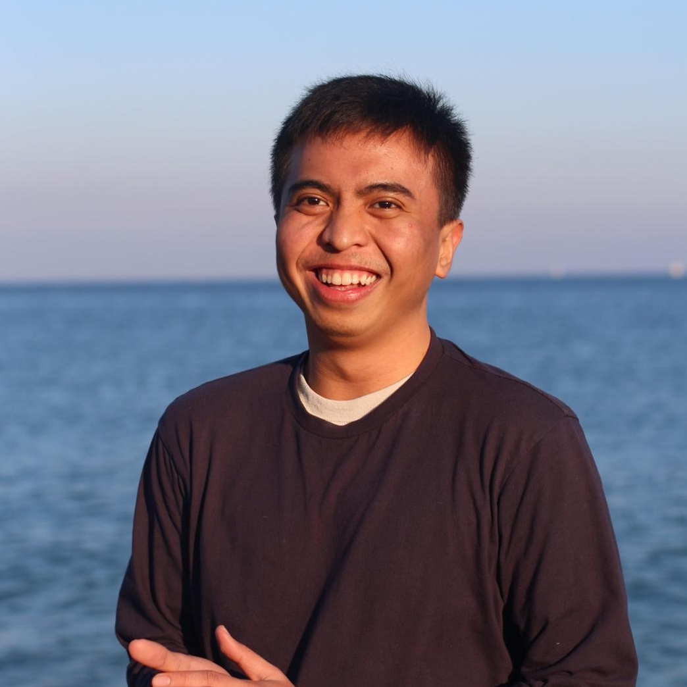

People
Lab head
Professor Anthony J. Richardson
Professor Anthony J. Richardson leads a dynamic and collaborative research group dedicated to using mathematical and computational tools to tackle some of the most pressing challenges in the ocean. His lab focuses on developing models to understand how to conserve marine biodiversity, predict and manage impacts of climate change, and understand the role of plankton in the ocean. He has authored >250 scientific papers and been cited >35,000 times.
The Mathematical Marine Ecology Lab is known for its supportive and collegial atmosphere, with a critical mass of researchers who share a passion for solving real-world ecological problems through quantitative approaches. Lab members benefit from a culture of curiosity, collaboration and innovation, and are encouraged to explore ideas at the interface of conservation, ecology and data science.
If you want to have impact and have a strong quantitative background or are keen to build those skills, then this could be the perfect lab for you. We welcome students and early-career researchers from a wide range of disciplines—including conservation, ecology, mathematics, statistics and computer science—to get in touch and discuss opportunities to work together.
Outside the lab, Anthony enjoys long-distance cycling and is an avid traveller. He has a love for African wildlife, and can often be found exploring game reserves during his holidays.
Senior Research Fellow
Dr Jason Everett
Jason is a biological oceanographer, with an interest in how oceanographic processes structure planktonic ecosystems.
His research has focused on how flow regimes, boundary currents, eddies and upwelling events drive changes in the biomass, species distribution and size structure of zooplankton communities. In addition, he have extensive experience working with satellite data and numerical model output.
Jason’s current research focus is to quantify how the size, abundance and biomass of zooplankton and fish change across local, regional and global scales. By quantifying the size-based ecosystem through modelling and observations, we can better understand processes such as metabolism, predation or movement, which constrain the role of an individual in its food web. In particular, the biomass and size distribution of zooplankton is poorly understood relative to phytoplankton and fish in our oceans, yet it is critical to understanding the efficiency of energy transfer through to fisheries.
Postdoctoral Fellows
Dr Kieran Murphy
Research Assistant
Kris Jypson Esturas
Kris is a budding marine ecologist with a strong interest in marine conservation, especially within the context of global climate change. He has recently finished an Erasmus Mundus Joint Master’s Degree in Tropical Biodiversity and Ecosystems (TROPIMUNDO), where he graduated as the top student of his cohort and received the Best Student Award. For his masters, he has studied in different institutions across different countries in Europe: Université Libre de Bruxelles/Vrije Universiteit Brussel (Semester 1); Université de La Réunion (Semester 2); and Università degli Studi di Firenze (Semester 3). For his final semester, which is completely allocated to thesis work, he worked on a marine spatial planning project using quantitative tools with The University of Queensland.
PhD Students
Diego Bezerra

Diego is an interdisciplinary marine ecologist interested in understanding the ecological mechanisms that drive ecosystem health. He foremost focuses on delivering scientific information to improve marine protected areas’ conservation outcomes. He is currently investigating elasmobranch migratory connectivity across reefs, and multispecies network models in conservation planning. He is also researching elasmobranch movement using network analysis as a tool to estimate population structures. Finally, his project aims to provide a baseline for shark migratory movement in Australia, strengthening understanding of connectivity within and beyond national jurisdictions.
Kristine (Tin) Buenafe

Tin is a PhD candidate from the Philippines working on climate-smart marine conservation planning with a particular focus in the high seas. While she enjoys coding all-day, working to develop reproducible tools and frameworks used to facilitate the uptake of climate-smart approaches in on-the-ground, applied conservation planning approaches, she wishes to continue navigating the science-policy interface, particularly in relation to the Biodiveristy Beyond National Jursidiction (BBNJ) Agreement.
Emer Cunningham

Emer is a marine ecology student and researcher, who lives and works in her hometown of Magandjin (Brisbane). Emer acknowledges that this ‘home’ is unceded, sovereign Aboriginal Country, and is committed to learning more about the lands and waters that she cares about so deeply. Back in 2018, Emer started a Bachelor of Advanced Science (Honours) at the University of Queensland – and she’s never left. Emer is in the final year of her PhD, investigating the patterns and drivers of ‘novel’ ecological states within coral reef ecosystems and pelagic plankton communities. Currently, Emer is working in the MME Lab researching ‘novelty’ in our changing climate – and helping to integrate this concept of rapid, unprecedented environmental change into marine spatial planning.
Alvise Dabala

Alvise is a PhD student at the Mathematical Marine Ecology Lab and the Applied Marine Biogeography Lab, supervised by Prof. Anthony Richardson and A/Prof. Daniel Dunn. His research focuses on developing climate-smart and connected spatial prioritisations for mangrove conservation to protect mangrove biodiversity and ecosystem services. He holds an Erasmus Mundus Master’s degree in tropical ecology (TROPIMUNDO). During his thesis, he developed a global study which identifies priority areas for mangrove conservation that maximise ecosystem services. Before starting his PhD at The University of Queensland, he joined the iAtlantic project, funded by the European Union’s Horizon 2020 research and innovation program, developing spatial prioritisations for the conservation of the Atlantic Ocean at the University of Azores.
Aharon Fleury

Aharon Fleury completed his Master of Science Biology (Fisheries) program at University of Victoria, Canada in 2016 where he evaluated the reproductive ecology of hagfish off the coast of Vancouver Island. He has since worked five years as an environmental consultant performing ecological and human health risk assessments and modelling the movement of contaminants to humans, plants, and animals via biotic transport pathways. The aim of Aharon’s PhD research is to develop and apply a framework, built on an individual-based model, for environmental impact assessments of marine species that explicitly incorporates connectivity across a migratory cycle and facilitates decision-making by incorporating stakeholder values.
Yunzhe Liu
Hannah Moloney
Sandra Neubert

Sandra is a marine data scientist with an interest in marine spatial planning and ecosystem modelling. She holds a BSc (Hons) in Marine Biology from the University of Plymouth and a MSc in Bioinformatics from the University of Leipzig. Sandra previous experience includes writing R packages and Shiny apps to facilitate stakeholder engagement with time-efficient and reproducible marine spatial planning apps. Her research focuses on designing marine protected areas and assessing their costs and benefits from an ecological and economic perspective. Her PhD will address multiple-use spatial planning in the Global South in a joint project by the University of Queensland and the University of Exeter.
Alice Pidd
Jaime Restrepo

Jaime (read: Hi-Meh [Hispanic name]) is a Colombian researcher and conservationist, with a background in environmental sciences. He has a master’s degree from the International Institute for Conservation and Wildlife Management from the University of Costa Rica. Jaime has more than a decade of experience working on the field and studying some of the most important populations of marine turtles globally, monitoring major rookeries for leatherback (Dermochelys coriacea), olive ridley (Lepidochelys olivacea), hawksbill (Eretmochelys imbricata) and green turtle (Chelonia mydas). Jaime has also been involved in conservation programs to protect the recovering population of jaguars (Panthera onca) at Tortuguero National Park, in Costa Rica. Currently, Jaime is an active member of the International Sea Turtle Society; as such, he has taken part on several symposia both presenting his research outcomes and coordinating regional meetings, he is now a PhD candidate at the University of Queensland, studying migratory connectivity for the two largest nesting populations of green turtles globally, implementing satellite telemetry monitoring combined with stable isotopes analysis to identify important foraging areas supporting these important populations.
Some of his previous work can be found here.
Tropimundo Students
We regularly supervise students from the Tropimundo Program for their final year thesis.
Bryan Alpecho

Bryan is a marine ecologist interested in the ecology of zooplankton ecology, and their role in ecosystem functioning. Currently, he is evaluating the changes in the zooplankton community across the global chlorophyll-a gradient. He is using a harmonized dataset of Continuous Plankton Recorder data from around the world. Previously, he has worked on plankton communities in a key Philippine reservoir and used benthic macroinvertebrates as bioindicators to assess the water quality in Philippine geothermal reserves. He is in his final semester for the Erasmus Mundus Joint Master’s Degree in Tropical Biodiversity and Ecosystems (TROPIMUNDO).
Honours Students
We regularly supervise Honours students.